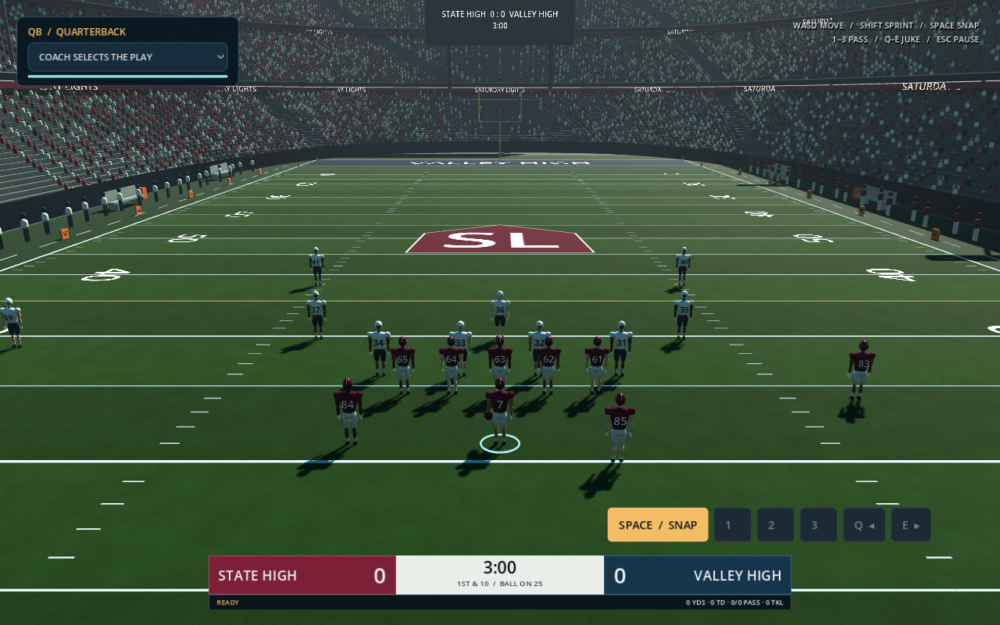

Your next Saturday.
On your PC.
A native 3D football game with animated athletes, a complete stadium, four playable positions and a condensed Road to Glory career.
Windows x86-64 or Linux x86-64; OpenGL 3.3 graphics support. Godot does not need to be installed to play. A Mac build is not included.

Start playing
- Download the ZIP for your computer.
- Extract the entire ZIP into a folder.
- On Windows, open
SaturdayLights.exe. KeepSaturdayLights.pckbeside it. - Choose Quick Play or create a career.
Browser career saves stay in the browser. The PC edition saves its own career locally.
On the field
- WASD / left stick: move your athlete
- Shift / right trigger: sprint
- Space / A: snap
- 1 / 2 / 3: QB pass targets
- 1: WR call for the ball
- Q / E: jukes; LB uses E to tackle
- C: camera · Esc: pause
What is included
Play QB, RB, WR or LB in simplified 11-on-11 football. Play three high-school games, earn recruiting stars and scholarship offers, commit to a college, buy upgrades and play four condensed three-game college seasons. The native art includes a new articulated athlete model, six animation clips, PBR uniforms, field markings, directional shadows and an enclosed stadium bowl.
Build checks
262 native gameplay checks and 73 career checks passed. The game was run and rendered on Linux. The Windows executable was exported using official Godot release templates; it has not been run on Windows in this environment. It is an unsigned prototype.
This edition uses Godot, not Unreal Engine. The models and animations are original procedural artwork. It is still a prototype and does not match EA production graphics. Players, coaches, offers and uniforms are fictional; no official logos or licensed real-player likenesses are included.